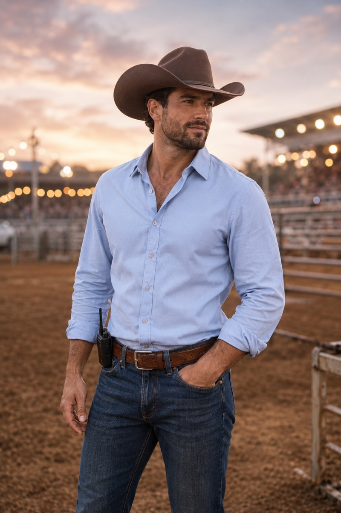

The Kingsleys of Cottonwood Ridge
Beckett Kingsley
Comeback, Cowgirl (Book 4) — Rugged. Quietly stubborn. The cowboy who once vanished without a word.

At a glance
- Age34
- FromCottonwood Ridge, Montana
- FamilyBoone Kingsley's second-eldest (of five)
- Works asRuns the family's rodeo operation (former competitor)
- LivesAt Kingsley Ranch, overseeing the rodeo side of the business
- StatusSingle (at the start of his story)
Meet Beckett
Beckett does his talking in the arena — always has. He's quietly stubborn, comfortable in his own skin, and slow to hand out words, but the reserve cracks the moment he's around the horses, where a real gentleness shows through. He knows the Kingsley rodeo operation better than anyone and carries its safety on his own shoulders. What he's never learned to do is stay in the room when his own heart is on the line — eight years ago the feelings that scared him sent him running, and he's carried the regret ever since.
The look: Tall and easy in his own skin, moving with the confidence of a man who stopped caring what a room thinks of him. Dark hair going silver at the temples, green eyes, and a tan worn in from years under the arena lights. Long strides, and a habit of pulling off his hat and pushing a hand through his hair when he's wrestling with what to say.
The heart of his story
Eight years ago, Beckett kissed a girl under the arena lights, promised they'd figure things out, then disappeared without a word — because caring that much frightened him more than any bronc ever had. When his father hires a consultant to modernize the family's rodeo business, Beckett walks into the barn and finds her standing there: the one person he never got over. Comeback, Cowgirl is the story of a man who ran from the best thing in his life, learning that the bravest thing he can do is stay.